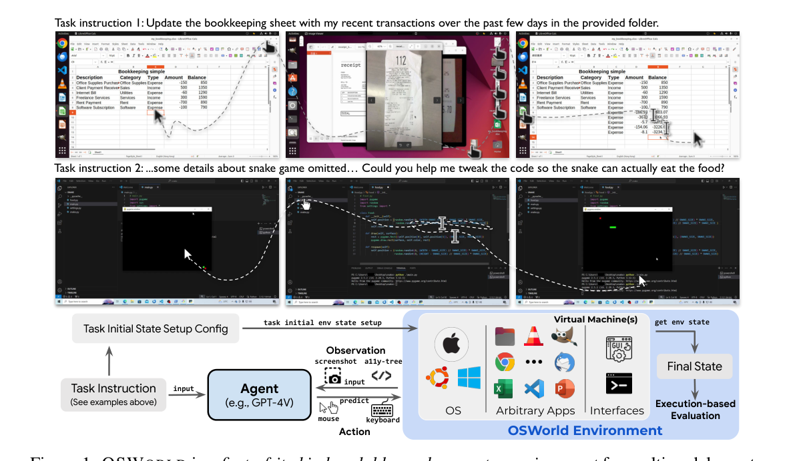

二、国内外研究现状
GUI 智能体：看屏幕、点鼠标
CLI
→
Coding
→
GUI
→
混合

OSWorld：真实操作系统可执行评测 [Xie et al., NeurIPS 2024]

UI-TARS-2：原生 GUI 智能体 + 多轮 RL [ByteDance Seed, 2025]
同模型、同任务（OSWorld）
79.1%
77.3%
14.3
29.0
通过率
平均步数
■ 纯 CLI ■ 纯视觉
CLI 以一半步数打平视觉
CLI 以一半步数打平视觉
优点：任何软件都能操作；OSWorld 两年 12% → 80%+，超过人类水平
不足：截图 token 开销大、步数多、看不到隐藏状态；纯 GUI 基准测的很多并非 GUI 能力
→ 纯 GUI 既不够、也不必：需要 CLI、代码与 GUI 混合